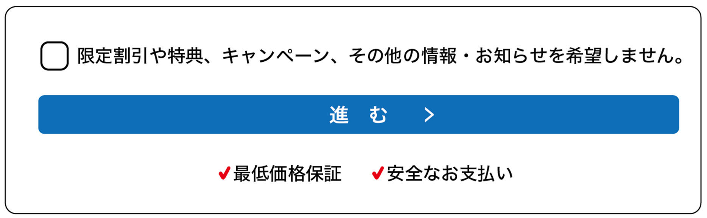

ダークパターン事例⑥ ひっかけ質問
資料での説明
質問が二重否定であるなど、消費者が誤解しやすい表現になっているもの
【例】
- チェックボックスの文章が「事業者からのお知らせを希望しません」となっており、希望しない場合はチェックを入れることになっている。文章が否定形で分かりにくく、消費者が配信を希望する場合にチェックを入れる形式が一般的であるため、消費者が誤解しやすい。

example-shop.jp/profile
お知らせ設定
example-shop.jp/profile
解説
「希望しません」にチェックする方式は、一般的な「希望する場合にチェック」という習慣と逆で、意図しない配信同意につながります。
改善例では肯定形で尋ね、何も選ばなければ配信しない状態にします。配信頻度と停止方法も同じ場所に書きます。